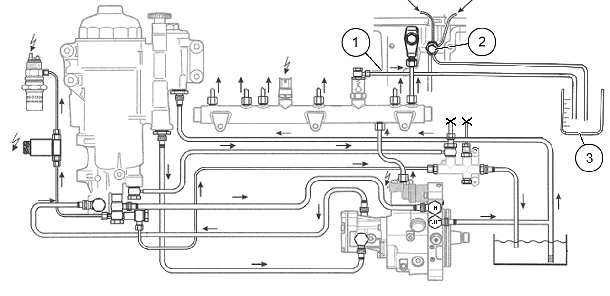
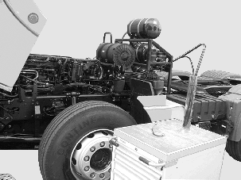
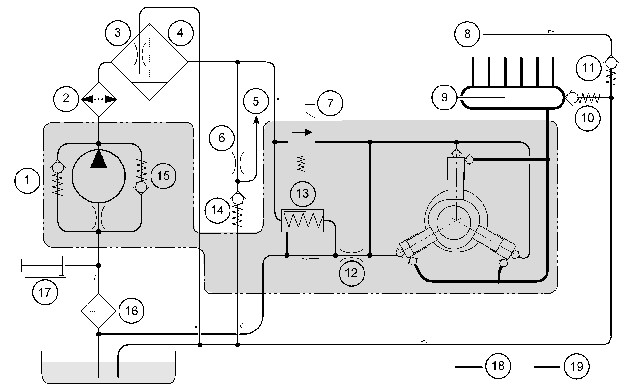
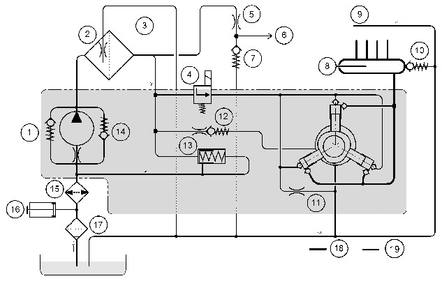
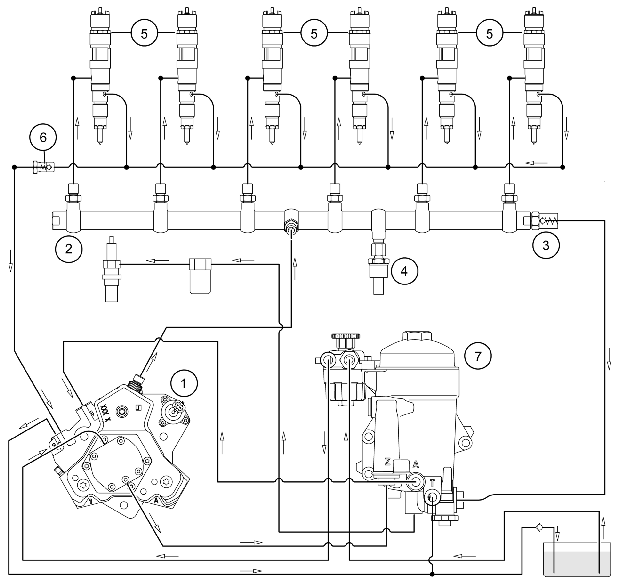
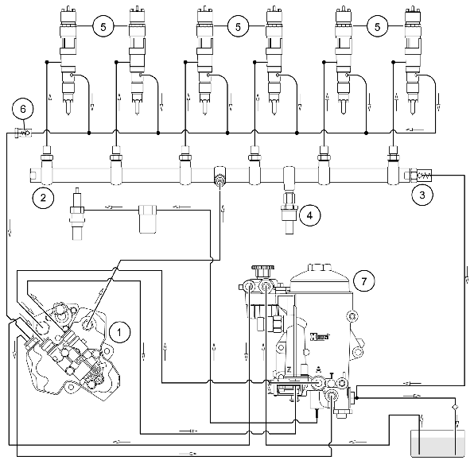

|
Módulo EDC7 Euro V
Lista de
etapas de verificação hidráulica.
Descrição dos aparelhos.

|
Generalidades sobre a identificação de
falhas
Antes de executar os trabalhos no sistema Common Rail,
salvar todas as falhas presentes e passadas do módulo EDC7. São informações que
podem ser úteis no futuro e servirão como registro histórico do ocorrido. O
sensor da pressão do Common Rail, válvula limitadora de pressão, unidade de
medição e bomba de engrenagens (bomba de alimentação) podem ser obtidos como
peças individuais e podem também ser substituídos individualmente.
Na identificação de falhas nos sistemas
EDC7 deve ser feita a diferenciação entre dois tipos de falha:
–
Falha no sistema de combustível (do lado da baixa pressão ou do lado da alta
pressão).
– Falha no sistema elétrico; Quando um motor com
gerenciamento feito pelo módulo EDC7 não pegar, embora seja acionado pelo motor
de arranque, não faz qualquer sentido tentar colocar o motor em funcionamento
através de uma operação de reboque. É melhor conectar a MCO-08, proceder à
leitura da memória de falhas e verificar através de "Monitorização",
se a unidade de comando EDC reconhece sinais de rotação e, se é gerada a
pressão do Common Rail.
Assim, aplica-se a seguinte regra:
–
Quando faltam ambos os sinais de rotação (virabrequim do motor e comando de
válvulas), os injetores são desativados e nenhum combustível será ministrado ao
motor.
– No caso de uma baixa pressão, menor que 3 bar, não é gerada
pressão no sistema Common Rail.
– A uma pressão do Common Rail maior que 200 bar, não são
acionados os injetores.
.
Mas é válido também:
– Sem combustível (reservatório vazio) não há injeção.
Catálogo de perguntas em caso de problema:
Procedimentos:
– Salvar a parte a memória de diagnóstico completa de todos
os módulos do veículo.
– Proceder a uma identificação exata de cada falha com a
ajuda da Lista SPN e do Programa de localização de falhas.
– Alimentação de combustível assegurada? Pressão no circuito
de baixa pressão corresponde às especificações? Consultar a lista de etapas de
verificação do sistema hidráulico.
– Realização de um controle do sistema elétrico. Consultar a
lista de etapas de verificação do sistema elétrico.
Perguntas adicionais
– O módulo está recebendo tensão da bateria?
– É possível se realizar um diagnóstico via MCO-08?
Quando ocorre a falha?
– Na hora de se ligar/desligar ou durante o funcionamento
normal do motor.
– Em que amplitude de rotações do motor.
– Em que velocidade de caixa ou durante qual mudança de
marcha.
– Ao se efetuar uma aceleração ou durante uma desaceleração
brusca.
– O problema ocorre continuamente ou apenas esporadicamente.
– Duração (valor aprox. em milésimos de segundo, segundos,
minutos...).
– Apenas em determinadas circunstâncias ambientais como
frio/calor/umidade.
– Em subidas e/ou descidas – Situação de carga do veículo.
Veículo com carga (quanto?) ou vazio.
– Combustível utilizado (Diesel, Biodiesel, querosene, etc).
– Existem dados sobre: Temperatura do óleo / temperatura da
água de arrefecimento / temperatura do ar de admissão.
– Foi detectado um aumento ou diminuição substancial do
nível do óleo.
– Comportamento do motor: Rotação instável/funcionamento
irregular/«motor engasgando, quadrado»/falha de ignição, fumaça negra, fumaça
azul, fumaça branca.
– Comunicações de falha no painel de instrumentos (cluster)
– Existem outras falhas, que não estão diretamente relacionadas com o problema
(falhas da PTM, ABS, LU, TCU, etc).
– Existem outras falhas, que não estão diretamente
relacionadas com o problema (falhas da PTM, ABS, LU, TCU, etc.)
– Caso o motor não pegue, embora o motor de arranque esteja
OK: O motor pega mesmo quando a válvula proporcional de combustível MProp da
bomba de alta pressão foi desconectada eletricamente?
 |
Nota!
Uma abertura forçada e repetida da válvula limitadora de
pressão para efeitos de verificação (através de desconexão elétrica da válvula
proporcional de combustível MProp) induz forçosamente à diminuição da pressão
de abertura da válvula limitadora de pressão. Poderá ser necessário substituir
a DBV (válvula limitadora de pressão do Common Rail).
– A temperatura do módulo é maior que 100 °C? Proceder à
leitura da temperatura máxima utilizando o MCO-08
– Óleo no chicote dos bicos injetores? Podem ocorrer também
as falhas SPN 0651 a 0656, curtos-circuitos devido ao óleo do motor.
– Foram verificados os chicotes do módulo (pinos mal
conectados/tortos, contatos soltos, etc.)?
– Foi verificado se, tanto o sensor de rotação do
virabrequim como o sensor de rotação do comando de válvulas estão emitindo
sinais corretos? A polarização elétrica está correta? Estado das superfícies
frontais dos sensores; distância de montagem: entre 0,5 e 1,5mm.
– Verificar os sinais de rotação no menu
"Monitorização" via MCO-08.
|
|
Nota!
Em caso de ausência de sinal de rotação do virabrequim,
nenhuma alteração do indicador de barras no MCO-08. Por isso, atenção às
informações na memória de falhas – Comunicações de estado na monitorização de
rotações com o sistema:
«é efetuada uma sincronização», «nenhuma falha»,
«estado normal» Falhas frequentes e instruções para a sua resolução; Se forem
apresentados as falhas 3775-2, 3776, 3777, 3778, 3779, 3780, 3781
individualmente ou associados deverá proceder-se da seguinte forma:
|
|
Nota!
As falhas 94-1 ou 94-2 não podem ser apresentadas aqui.
Ter em atenção as Instruções de Serviço 252400, 298100 e
334700.
|
|
Passo 1:
|
– Verificar os condutores e conectores elétricos para a
unidade de medição e para o sensor de pressão do Common Rail
– Quando, além do SPN 3781, não existir outro registro de
falha: Muito provavelmente não existe qualquer falha elétrica, e sim uma
pressão excessiva no tubo de retorno para o reservatório de combustível.
Efetuar a medição da pressão, se possível na proximidade da Unidade
Gerenciadora de Combustível. Valor nominal: menor que 0,2bar.
Em todas as falhas em que a DBV (válvula limitadora de
pressão) é aberta (p. ex. SPN 3777, 3781), a causa da falha também poderá ser
um tubo de retorno obstruído (p. ex. tubo dobrado, etc.) para o reservatório de
combustível (no caso de bombas lubrificadas pelo próprio combustível).
|
|
Passo 2:
|
– Quando em marcha
lenta e com o motor aquecido (líquido de arrefecimento no mínimo a 70 °C) for
detectado um valor elevado de saída do regulador de pressão do Common Rail, na ordem
dos 10-14%, substituir a unidade de medição.
– Caso não haja uma alteração de valor menor que 6%, voltar
a montar a unidade de medição original e prosseguir com o passo 3.
|
|
Passo 3:
|
– Medir o volume da
fuga dos bicos injetores e da válvula limitadora de pressão.
– Se a quantidade for excessiva, verificar a estanqueidade
da válvula limitadora de pressão (a válvula limitadora de pressão tem que ser
estanque, é admissível uma fuga de poucas gotas).
– Em caso de fuga, substituir a válvula limitadora de
pressão e repetir a medição da quantidade total de fuga. Controle do valor de
saída do regulador de pressão do Common Rail, verificar se menor que 6%.
– Caso a DBV (válvula limitadora de pressão) se apresentar
com boa vedação ou poucas gotas, medir as fugas individuais de cada um dos
injetores.
|
|
Passo 4:
|
Caso no passo 2 seja
detectado um valor de saída do regulador de pressão do Common Rail entre 6 e
10%:
– Substituir agora a unidade de medição.
Para excluir temporariamente uma unidade de medição
bloqueada levar em consideração as instruções da unidade de medição.
|
|
Passo 5:
|
– Substituir o sensor
de pressão do Common Rail (apenas para SPN 3781)
|
|
Passo 6:
|
– Medir a descarga da bomba de alta pressão
Se a quantidade for demasiado reduzida:
– Substituir a bomba de alta pressão. |
Nota:
A bomba de alta pressão e a válvula proporcional de combustível MProp
(unidade de medição) são
forjadas em conjunto no processo de produção. Por esse motivo, utilizar
sempre
uma válvula proporcional de combustível MProp sobresselente para este
teste. Nunca utilizar a válvula proporcional de combustível MProp de
outra bomba de
alta pressão (por exemplo, de outro veículo).
Uma válvula proporcional de combustível MProp em funcionamento regula numa amplitude bastante
estreita, ou seja, o valor percentual apresentado na monitorização varia em
marcha lenta apenas uns poucos décimos de pontos de percentagem. Se o valor
saltar vários pontos de percentagem, será considerado que a válvula proporcional de combustível MProp esteja
bloqueada.
Nota 1: A
transição de CP3.4+ para CP3.4+ com pacote de lubrificação (Anti Wear Package)
não depende do tipo de motor, é efetuada sim em função do consumo. Para a
oficina isto significa: que é necessário observar primeiro a bomba, e que válvula proporcional de combustível MProp
padrão está instalada, para poder ligar à válvula proporcional de combustível MProp sobresselente adequada.
Indicações gerais relativamente à localização de falhas no
circuito de combustível
Procedimento para quando existe «dificuldade de partida do
motor»
Deve se ter em mente que o sistema Common Rail tem tempos de
partida mais longos que um sistema EDC com um sistema de bomba injetora. Num
sistema Common Rail, para cada partida do motor é necessário gerar primeiro a
pressão nos sistemas de baixa e de alta pressão. Daqui resulta que os tempos de
partida do motor poderão ser de até 3 segundos.
Caso um motor Common Rail necessite de substancialmente mais
tempo para arrancar, diversos tipos de falha poderão estar na origem do
problema:
– Fuga no sistema de combustível
No sistema Common Rail, quando parado, não existe separação
entre alimentação e retorno, uma fuga em qualquer ponto do sistema de
combustível conduz ao esvaziamento do sistema de combustível. Implicação:
tempos de arranque prolongados (até 30 seg.) Com a introdução de uma paragem de
retorno (acoplamento rápido «verde» na tubagem de alimentação, no ponto de
transferência motor/chassi) foi possível melhorar significativamente o
comportamento de arranque: Tempo de arranque agora apenas de aprox. 2 segundos.
– Válvula de descarga na bomba de alta pressão: Defeito,
fuga, corpo estranho no ponto de vedação.
– Orifício de ventilação no KSC sujo ou não existente,
consequentemente mensagem de falha: 94-2, ou seja, pressão de alimentação de combustível
muito baixa.
Sintomas: Os problemas de arranque ocorrem na maioria dos
casos após a substituição do elemento do filtro. Quando o circuito de baixa
pressão é bombeado com a bomba de alimentação manual, o motor arranca de forma
relativamente normal. Poucos minutos após a paragem do motor voltam a surgir
problemas de arranque.
Causa: Devido à ausência ou à sujidade no orifício de
ventilação, permanece no KSC uma almofada de ar. Após desligar o motor, esta
volta a expandir-se e pressiona o combustível para fora do KSC. Por
conseguinte, no processo de arranque demora muito tempo até que ser gerada
pressão no combustível do lado da baixa pressão.
Procedimento para quando o «Motor não arranca»
– Em caso de interrupção na CAN do motor, problema de chicote
para o IMR (relé do motor de partida), defeito do IMR (relé do motor de
partida) ou problemas no chicote para o terminal 50 do PTM (Power Train
Manager) o motor de arranque não arranca.
– Em caso de ID (código de identificação) Imobilizador
falso, o motor não é acionado pelo motor de arranque. No display surge o
símbolo «Imobilizador de arranque ativado»
– Sem sinal de rotação do sensor do virabrequim e do comando
de válvulas, o motor roda o motor de arranque durante 900ms e aborta então o
arranque com «reconhecimento de comutação cega».
– Em caso de formação de par EDC/PTM falsa, o motor é rodado
pelo motor de arranque, mas a injeção não é ativada pelo módulo EDC (o motor
não arranca).
– Em caso de falhas no registro de rotações do sistema de
virabrequim, o módulo EDC7 tenta, através de "injeções experimentais"
na mudança de PMS da ignição e aceleração, determinar o PMS da ignição (maior
aceleração de rotação do volante do motor durante a ignição) e, desta forma,
arrancar o motor apenas com o sistema de rotação da cambota do motor. O
resultado é um tempo de arranque mais prolongado.
Quando um motor gerenciado pelo módulo EDC7 não arranca,
embora seja rodado pelo motor de arranque, não faz qualquer sentido tentar
colocar o motor em funcionamento através de uma operação de reboque. É melhor
ligar o MCO-08, proceder à leitura da memória de falhas e verificar através de
«Monitorização», se a unidade de comando EDC reconhece sinais de rotação e, se
é gerada pressão do Common Rail.
Assim, aplica-se a seguinte regra:
– Quando ambos os sinais de rotação estão em falta (comando
de válvulas e virabrequim), não é injetado qualquer combustível.
– No caso de uma baixa pressão menor que 3 bar não é gerada
pressão no Common Rail.
– A uma pressão do Common Rail menor que 200 bar não são
acionados os injetores.
Mas é válido também:
– Sem combustível (depósito vazio) não há injeção
Uma ativação do injetor verifica-se apenas quando a pressão
efetiva do Common Rail é maior que 200bar, ou seja, com uma pressão efetiva
demasiado baixa o motor não arranca. O fato desta pressão efetiva do Common Rail
não ser atingida poderá ter como causas os seguintes aspectos:
– Ar no sistema de baixa pressão / filtro de combustível,
realizar um ensaio de estanqueidade.
– Após substituição do filtro de gasolina não foi feito a
sangria do ar de forma correta.
– Pré-bomba de alimentação defeituosa e não gera qualquer
pressão primária, verificar a linha de baixa pressão.
– Válvula de descarga na bomba de alta pressão avariada, não
há estanqueidade. Verificar a linha de baixa pressão.
– Quantidade total de fuga dos injetores e válvula
limitadora de pressão nas condições de arranque em questão.
– Fuga entre o Common Rail e o injetor, verificar ensaio de
estanqueidade para retorno de óleo de fuga dos injetores. Em caso de fuga:
Substituir bocais de tubos de pressão.
– Injetor danificado (não fecha), verificar ensaio de
estanqueidade para retorno do óleo de fuga dos injetores.
– Bomba de alta pressão danificada (verificar capacidade de
alimentação da bomba).
Procedimento
|
Passo 1:
|
– Caso seja
apresentada a falha 94-1 ou 94-2, isto significa que existe uma falha no
sistema de baixa pressão. Inspecionar o sistema de baixa pressão.
|
|
Passo 2:
|
– Verificar o acréscimo de pressão no Common Rail durante o
processo de arranque, utilizando a MCO-08.
– Caso não ocorra o acréscimo de pressão, maior que 350bar,
prosseguir com o passo 3.
– Se a pressão do Common Rail estiver correta, existe uma
falha elétrica (memória de falhas, lista de etapas de verificação ou ensaio de
compressão com a MCO-08).
|
|
Passo 3:
|
– Medir o volume da fuga dos injetores e da válvula
limitadora de pressão.
– Se a quantidade for excessiva, verificar a estanqueidade
da válvula limitadora de pressão (a válvula limitadora de pressão tem que ser
bem vedada, admite-se uma fuga de poucas gotas).
– Em caso de fuga, substituir a válvula limitadora de
pressão e repetir a medição da quantidade total de fuga.
– Se a quantidade total de fuga for admissível, prosseguir
com o passo 5.
|
|
Passo 4:
|
– Medir as quantidades individuais de fuga dos injetores.
– Em caso de avaria do cilindro, soltar as tubulação de
pressão e voltar a apertar.
– Caso a quantidade de fuga individual ainda seja elevada,
substituir o injetor e o tubo de pressão.
|
|
Passo 5:
|
– Montar a unidade de medição sobresselente a título
experimental.
– Caso o resultado não seja positivo, substituir a bomba de
alta pressão.
|
- mesmo válvula proporcional de combustível MProp - de caracteristicas diferentes.
Solução:
– Ligar o motor com a válvula proporcional de combustível MProp desconectada.
Quando este arranca:
– Lavar o sistema de combustível com Diesel de qualidade e
fazer um teste de rodagem extensiva com diesel.
– Realizar teste de aceleração com combustível diesel. Se o
resultado do teste for bom, recomendar então ao cliente a utilização futura de
combustível diesel de qualidade, dado que o combustível que costumava utilizar
poderá voltar a provocar o mesmo dano.
– Se o motor não arrancar ou apresentar um funcionamento
irregular após um curto espaço de tempo é necessário substituir os injetores.
Também neste caso, recomendar ao cliente a utilização futura de combustível
diesel de qualidade, dado que o combustível anteriormente utilizado poderá
voltar a provocar o mesmo dano.
Procedimento em caso de «sobrepressão no depósito de
combustível»
Caso o condutor reclame que ao abrir o tampão do depósito há
pressão em excesso «dispara» o tampão e que do bocal é expelido gás de
combustão, a causa do problema é provavelmente a seguinte: Um dos injetores na
cabeça do motor ficou frouxo e, consequentemente, gases de combustão são
conduzidos para o sistema de óleo de fuga e através da tubulação de óleo de
fuga para o depósito.
Solução:
– Desmontar a tampa da válvula e inspecionar os injetores
quanto a um eventual rompimento do flange de pressão.
– Desmontar o injetor afetado.
– Substituir os anéis de vedação, flange de pressão e
tubulações de pressão.
– Voltar a montar o injetor de acordo com as respectivas
instruções.
Nota: Caso a vedação do injetor apresente uma fuga,
juntamente com os gases de combustão é conduzida também fuligem de combustão
para o depósito de combustível. Conforme o tempo em que se seguir circulando
com esta falha, será acumulada mais ou menos fuligem para o combustível, a qual
irá bloquear o filtro de combustível. Por este motivo o veículo acabará parando
de vez. Assim, recomenda-se o seguinte procedimento: Nos primeiros dois meses
após a reparação efetuar uma substituição semanal do filtro de combustível. Em
casos extremos será necessário remover totalmente o combustível do depósito e
abastecer com combustível novo e de qualidade. Por vezes também será necessária
uma limpeza interna do depósito.
Procedimento quando o «motor expele fumaça branca»
Em caso de reclamação de que o «motor expele fumaça branca»
a causa raramente será uma falha no sistema Common Rail.
Por isso, neste caso, verificar sempre primeiro a estanqueidade
do sistema de partida:
– Desmontar a tubulação de combustível entre a válvula solenoide.
Se, após este procedimento o motor continuar a expelir fumo
branco, então proceder conforme indicado para uma reclamação de «funcionamento
irregular do motor».
Procedimento para quando o «Motor expele fumaça negra»
Primeiramente, é necessário identificar em que estado de
funcionamento ocorre a formação de fumaça preta:
– O motor gera sempre fumaça preta?
– O motor gera fumaça preta apenas na aceleração?
Foram identificadas até à data as seguintes causas
possíveis:
– Falha de montagem, injetor espanado.
– Fuga entre a câmara de combustão e óleo de fuga, vedação
inferior do injetor (anel de vedação em cobre) com vazamento.
– Desgaste dos injetores (elevada quantidade de fuga).
– Sobreposição de injetores incorreta
Quando, durante uma viagem de ensaio é de fato detectado
fumaça preta, recomenda-se o seguinte procedimento:
– Proceder à consulta da memória de falhas do módulo EDC7
– Caso se encontrem registros de falhas, proceder de acordo
com as instruções de identificação de falhas e repetir o teste de rodagem.
Se continuar a ser expelida fumaça preta, mas não houver uma
falha registrada na memória de falhas:
– A experiência demonstrou que, nos motores com pouca
quilometragem, pode ser gerada fumaça preta devido a injetores montados com
tensão.
Ajuda: Afrouxar todas as fixações de tubos de pressão e
injetores e, em seguida, voltar a apertar as mesmas de acordo com as
instruções. Caso este procedimento não seja bem sucedido, a causa da formação
de fumaça, em especial durante a aceleração, poderá estar relacionada com um
desgaste dos injetores.
Em seguida, efetuar medições individuais das quantidades de
fuga e substituir os injetores afetados.
– No caso de danos anteriores no turbo poderá ocorrer também
uma alimentação de óleo no tubo de escape. Isto também poderá originar fumaça
preta ao acelerar.
Solução: Substituir o tubo de escape.
Se, ainda assim, o motor continuar a gerar fumaça preta:
– Realizar o teste de aceleração, no mínimo, duas vezes.
Caso o teste de aceleração não revele problemas:
– Desmontar todos os injetores
– Inspecionar a vedação na zona dos injetores (anel de
vedação em cobre) quanto a eventuais resíduos de fumaça
– Verificar o diâmetro dos anéis (de cobre) de vedação
Caso seja detectado que um ou mais injetores apresentam fuga
e/ou os anéis de vedação em cobre têm um diâmetro excessivo:
– Substituir os anéis de vedação e tubulações de pressão, e
voltar a montar os injetores.
– Efetuar uma viagem de ensaio
Caso continue a ser expelida fumaça preta ou não seja
detectada qualquer fuga na vedação inferior do injetor:
– Substituir todos os injetores e tubulações e montar com
novos anéis de vedação, de acordo com as instruções.
Nota: Caso a vedação do injetor apresente uma fuga,
juntamente com os gases de combustão é conduzida também fuligem de combustão
para o depósito de combustível. Consoante o tempo que se conduzir com esta
falha, será conduzida mais ou menos fuligem para o combustível, a qual irá
bloquear o filtro de combustível do KSC. Por este motivo o veículo acabará por
parar. Assim, recomenda-se o seguinte procedimento: Nos primeiros tempos após a
reparação proceder a uma substituição semanal do filtro de combustível. Em
casos extremos será necessário purgar a totalidade do combustível do depósito e
abastecer combustível novo. Por vezes é também necessária uma limpeza do
reservatório.
Procedimento em caso de «batimento do motor»
Em caso de reclamação de «batimento do motor» na maioria dos
casos a causa está associada a uma falha de injetor. Por isso, neste caso,
proceder a um teste de compressão e aceleração.
Nota: Realizar o teste de aceleração apenas com o motor
quente, pois caso contrário poderá ser obtido um diagnóstico incorreto. Se a
falha não for detectável através do teste de aceleração ou se o motor estiver
demasiado frio para o teste de aceleração, com o motor ligado desconectar os
cilindros individuais recorrendo à caixa de ligações e procurar assim o injetor
danificado.
Alternativas:
– Desconectar uma após a outra as ligações de cada cilindro
individual diretamente no injetor, voltar a montar a tampa da válvula e ligar o
motor.
– Futuramente existirá a possibilidade de desligar cilindros
individuais com a MCO-08
Procedimento em caso de «detonação do motor»
Em caso de reclamação de «detonação do motor» na maioria dos
casos a causa está relacionada com um dano mecânico (dano na válvula, travamento,
etc.). Por isso, neste caso, realizar o teste de compressão.
Procedimento em caso de «funcionamento irregular do motor»
Caso sejam apresentadas reclamações de:
– Funcionamento irregular do motor
– Ruídos de funcionamento anormais
– Falta de potência do motor
– Fumaça branca e funcionamento irregular do motor entre a
rotação de marcha lenta e a rotação de 1100rpm durante a fase de aquecimento
Deverá proceder-se da seguinte forma:
– Atualizar o módulo EDC (consultar Informação de Serviço
249800)
– Realizar o teste de compressão
Indicação de defeito mecânico, por ex., válvula danificada
ou travamento
– Realizar o teste de aceleração
Indicação de defeito nos injetores, quando depois de
efetuado o teste de compressão o motor é classificado como OK:
– Caso não seja detectada a causa através do teste de
compressão e aceleração, colocar a caixa de conectores, desligar os injetores
individuais e procurar o cilindro de onde provém o ruído anormal.
Condições de verificação: Temperatura do líquido de
arrefecimento, no mínimo a 75 °C. Realizar sempre primeiro o teste de
compressão. Após realizar o teste de aceleração «desligar a ignição» e, em
seguida, verificar as quantidades
(código de identificação) de correção. É importante também que durante o
teste o compressor de ar ou o ventilador não seja ligado.
Indicações adicionais: Em caso de pressão demasiado elevada
na linha de retorno (maior que 0,2bar) poderão surgir problemas com a regulação
de pressão do Common Rail. Importante: A pressão de retorno tem que ser medida
próximo do motor!
Não é possível efetuar um diagnóstico através do MCO-08. É
possível efetuar um diagnóstico através de uma ferramenta especial para ligação
de um manômetro (peça em T), adequada para todos os motores Common Rail.
Danos no restritor do Common Rail
Nos veículos com motor Common Rail pode suceder que um ou
mais orifícios redutores (em cada saída para os injetores no Common Rail)
fiquem frouxos, se desloquem ou partam. A consequência do dano é um injetor
defeituoso. Se o dano no orifício redutor do Common Rail não for detectado ou
reparado, o novo injetor também será destruído!
Efeitos/consequências: Injetor danificado, fragmentado,
partido, funcionamento irregular do motor, fumaça preta, consumo de combustível
excessivo, danos repetidos no injetor.
Detecção: Em caso e dano no injetor com os sintomas acima
descritos, verifique também, com a tubulação de injeção desmontada, os
elementos dos orifícios redutores no Common Rail, através de uma comparação
visual. Uma verificação com "broca" está interdita, pois existem
diferentes modelos de Common Rail com diferentes diâmetros de orifício e,
consequentemente, existe perigo de infiltração de sujeira e danificação.
Ajuda: Substituir o Common Rail completo e, relativamente
aos cilindros afetados (com orifício redutor danificado) substituir
adicionalmente todas as componentes seguintes (tubo de injeção, bocal do tubo
de pressão, injetor). A experiência demonstrou que não é necessário substituir
também as componentes dos outros cilindros.
Mala de diagnóstico para motores Common Rail
A mala de diagnóstico existe em diversas variantes de
equipamento:
– A mala standard LE-MAN02 contém tudo o que é necessário
para a verificação de todos os motores em linha MAN-CR (ou seja, o conteúdo da
variante anterior a 08/2007, incluindo o kit suplementar LE-MANEK01).
ID (código de identificação)
Identificação de falhas no sistema de baixa pressão.
Em caso de problemas de partida, reclamação de falta de potência
e/ou pressão insuficiente no Common Rail deverá ser medido (código de
identificação) em primeiro lugar a pressão no sistema de baixa pressão.
Verificar a pressão do combustível antes do filtro,
utilizando a Monitorização MCO-08.
|
1. A pressão do combustível em marcha
lenta é de, no mínimo, 5,5 bar?
|
|
Em caso afirmativo:
– Prosseguir para o
ponto 2
|
Em caso negativo:
– Se
a pressão do combustível for inferior a 5 bar, verificar a unidade de
extração no depósito de combustível e a
tubulação para a bomba de alimentação quanto à estanqueidade
– Se a pressão do
combustível for superior a 8,5 bar, substituir o filtro de
combustível e voltar a efetuar a medição
|
|
2. A pressão do combustível agora está correta?
|
|
3.
A válvula limitadora de pressão (DBV) apresenta-se estanque com o motor
em funcionamento? (é permitida a fuga de
algumas gotas)
|
|
Em caso afirmativo:
– Prosseguir para o
ponto 4
|
Em caso negativo:
– Realizar um ensaio
de estanqueidade da válvula limitadora de pressão (DBV)
– Substituir a
válvula limitadora de pressão
|
|
4. Realizar um Controle de
funcionamento da válvula de descarga da bomba de alta pressão. Valor
nominal menor que 4 bar
|
Verificação da válvula de descarga
Esta válvula de descarga (ver pos. 13 no esquema geral de
combustível) limita/regula a pressão inicial no circuito de baixa pressão.
Pressão de abertura em marcha lenta do motor (dinâmico): 5,5 a 6,0 bar Valor
nominal com o motor parado (estático): aprox. 4 bar A sua capacidade de
funcionamento tem uma grande influência sobre o comportamento de partida. A
partir do Euro 4 passaram a ser montadas bombas lubrificadas a combustível com
circuito interno de aquecimento parcial. Por isso, apenas é possível efetuar a
verificação da válvula de descarga após ser desmontada a bomba de alimentação.
Procedimento para bombas de alta pressão lubrificadas a óleo:
– Desligar o condutor do KSC (central de tratamento do
combustível) para a bomba de alta pressão diretamente na bomba de alta pressão
e montar o adaptador de verificação com manômetro, amplitude de medição 0 a 10bar.
– Na ligação «OUT» da bomba de alta pressão, retirar a
tubulação de retorno do circuito parcialmente aquecido e fechar com um tampão.
– Com a bomba manual aumentar a pressão no circuito de baixa
pressão até que a válvula de descarga se abra e saia combustível na ligação
«OUT».
– Durante o processo de bombeamento ler a pressão de
abertura no manômetro. Valor nominal estático, aprox. 4bar.
Procedimento para bombas de alta pressão lubrificadas a
combustível:
Conforme anteriormente referido, a partir do Euro 4 passou a
ser montada uma bomba de alta pressão lubrificada a combustível. Estas bombas
têm um circuito interno parcialmente aquecido (código de identificação). Não é
possível verificar a válvula de descarga na ligação «OUT» conforme
anteriormente descrito.
– Desligar o condutor do KSC (central de tratamento do
combustível) para a bomba de alta pressão diretamente na bomba de alta pressão
e montar o adaptador de verificação com manômetro, amplitude de medição 0 a 10bar.
– Com a bomba manual aumentar a pressão no circuito de baixa
pressão até que a válvula de descarga se abra.
– Durante o processo de bombeamento ler a pressão de
abertura no manômetro. Valor nominal estático, aproximadamente (4 bar).
– Em caso de suspeita de fuga substituir a válvula de
descarga (13) e voltar a verificar.
Verificação da válvula de manutenção de pressão:
Esta válvula (ver pos. 11 no esquema geral de combustível,
bomba de alta pressão lubrificada a óleo) assegura uma pressão dinâmica
relativa de aprox. 1,2 a 1,4bar no retorno de óleo de fuga dos injetores. A sua
capacidade de funcionamento não tem qualquer influência sobre a partida do
motor (código de identificação), sendo apenas necessária para o bom
funcionamento dos injetores com armadura de peça única.
A válvula de manutenção de pressão só é montada para CRIN2
com armadura de peça única. A partir do início da série D20 Euro 4 (10/2004)
passou a ser montado -6064 (armadura de duas peças). E este continua a ser
preferivelmente montado no Euro 4 OBD LF31... e no Euro 5 LF21... Logo, nestes
motores não se monta a válvula de manutenção de pressão.
Para a verificação da válvula de manutenção de pressão é
necessário que a mesma seja desmontada. É importante que a válvula abra e não
se encontre bloqueada.
Identificação de falhas no sistema de alta pressão.
A condição básica para o funcionamento do sistema de alta
pressão é um sistema de baixa pressão sem falhas. Em caso de suspeita de uma
falha no sistema de alta pressão é recomendada em primeiro lugar uma
verificação da estanqueidade da zona de alta pressão através da quantidade de
fuga.
Verificação da quantidade de fuga.
É normal no sistema o refluxo do óleo de fuga. No entanto,
através da quantidade por unidade de tempo podem ser obtidas conclusões importantes
para a identificação de falhas. Por norma, deve ser feita a diferenciação entre
o óleo de fuga com o motor em funcionamento e aquele durante a fase de partida.
Além disso, deve ser tido em consideração se o motor se encontra equipado com
um sistema de partida por incandescência ou não.
Nos motores MAN Common Rail, o óleo de fuga que flui de
volta para o depósito é composto pelos seguintes subconjuntos:
– Quantidade permanente de ventilação do KSC (central de
tratamento do combustível)
– Óleo de fuga da zona dos injetores
– Óleo de fuga da válvula limitadora de pressão, quando esta
não se apresenta estanque (avaria).
– Quantidade no estado inicial de partida da válvula
limitadora de pressão para o sistema de partida por incandescência.
|
Nota:
A saída de apenas algumas gotas de combustível é admissível com o
motor em funcionamento.
|
Para a identificação de falhas é importante diferenciar a
origem da eventual quantidade acrescida de óleo de fuga. Para permitir uma
avaliação rápida sem um longo período de inatividade, são apresentados em
seguida métodos de verificação relativamente simples e, como orientação, as
quantidades de óleo de fuga de motores em funcionamento. Dado que, cada sistema
Common Rail é muito sensível a sujidade, foram desenvolvidos métodos de
verificação para os quais não é necessário abrir o lado limpo da zona de baixa
pressão nem o sistema de alta pressão. Apenas para uma única medição é
necessário desmontar as tubos individuais de alta pressão.
|
Nota:
Após realizados os trabalhos de verificação, sempre apagar a
memória de falhas.
Medição da quantidade total de fuga:
A
quantidade total de fuga corresponde à quantidade de combustível dos
injetores e da válvula limitadora de pressão que retorna para o
reservatório de combustível em velocidade de
rotação em marcha lenta |
Por isso é importante que, durante esta verificação seja
evitado que o refluxo de combustível da evacuação de ar permanente do KSC
(central de tratamento do combustível) e a quantidade no estado inicial de partida
da válvula limitadora de pressão para o sistema de partida por incandescência
não adulterem o resultado da medição.
Por este motivo, é necessário que na medição da quantidade
total de fuga através de meios adequados, seja assegurado que apenas a quantidade
de fuga eventualmente existente da válvula de limitação de pressão e dos
injetores flua para o copo de medição. Não é possível para todos os tipos de
motor medir a quantidade total de fuga num único ponto de ligação.
Preparações
A configuração da medição é idêntica à da medição do óleo de
fuga dos injetores e da válvula limitadora de pressão (DBV). A diferença reside
apenas no fato de ambos os tubos de poliamida são simultaneamente ligados e as
quantidades contadas em conjunto.

Apresentação do princípio de configuração de medição para motores D28.
1 Refluxo da válvula limitadora de pressão.
2 Refluxo do óleo de fuga dos injetores.
3 Copo graduado (mín. 1000 ml, divisão 10 ml).

Procedimento de medição e avaliação para todos os tipos de motor
Iniciar a medição apenas quando sair da tubulação medir em
ambos os tubos as quantidades constantes de fuga. Para não adulterar o
resultado da medição é necessário assegurar que os tubos da medição não sejam
mergulhados no combustível.
Procedimento:
– A ficha de ligação do M-Prop à bomba de alta pressão
permanece ligada.
– Ligar o motor.
– O motor funciona com rotação excessiva em marcha lenta.
– Medir a quantidade total de fuga.
Quantidade de refluxo a uma velocidade de ralenti, 500 bar de pressão
no Rail e motor aquecido.
|
D0834
|
aprox. 50 ml por minuto
|
Neste método de medição, conforme anteriormente referido, é
verificada a quantidade de fuga da válvula limitadora de pressão e dos
injetores, com o motor em marcha lenta. Uma quantidade de refluxo muito elevada
indica assim uma falha na área dos injetores ou uma válvula de limitação de
pressão não estanque. Por este motivo, é necessário que, em medições
individuais, a DBV e os injetores sejam verificados separadamente.
Nas bombas de alta pressão lubrificadas á combustível existe
perigo de uma medição errada! Ao proceder à verificação da quantidade total de
fuga é importante que o refluxo (ligação «OUT») da bomba de alta pressão para o
depósito de combustível se encontre ligado e que o combustível extravasado seja
conduzido através de uma tubulação separada para um recipiente de recolha. Caso
não seja respeitado este procedimento, o resultado da medição não será correto.
A ligação OUT na bomba não pode ser selada, pois caso
contrário, a bomba deixa de ser lubrificada.
Nota: Nos motores com pouca quilometragem, em 90% dos casos
é relativamente simples solucionar uma quantidade de fuga acrescida: Afrouxar
todas as fixações de tubos de pressão e injetores e, em seguida, voltar a
apertar as mesmas de acordo com as instruções. Caso este trabalho não solucione
o problema, efetuar medições individuais de quantidades de fuga e substituir as
tubulações afetadas.
Caso o "Valor de saída do regulador da pressão do Common
Rail” na monitorização "Pressões" se altere após a partida do motor,
isto indicará uma fuga na área do bocal de pressão. Exemplo: Imediatamente após
a partida do motor, o valor é de aprox. 8% e, após um curto espaço de tempo de
funcionamento do motor este valor aumenta para 25%. Se este valor sofrer uma
alteração mínima, a fuga estará localizada provavelmente num ou mais injetores.
Em caso de reparação do valor de tempo (veículos com uma quilometragem
elevada): Uma quantidade de fuga menor que 100 ml/min é admissível, dados que
não provoca um registro de falha.
Verificar a estanqueidade da válvula limitadora de pressão.
Independentemente do fato de o motor se encontrar ou não em
funcionamento, ou rodar apenas através do motor de partida: A DBV tem de ser
estanque, com o motor em funcionamento apenas é admissível a saída de algumas
gotas de combustível. Uma quantidade de refluxo com a DBV aberta (~850 bar) só
é admissível em caso de falha (p. ex. falha na regulação da pressão do Common Rail),
caso contrário a DBV deverá ser classificada como danificada.
Para poder avaliar melhor a estanqueidade da DBV é recomenda
a realização do teste de alta pressão. O teste pode ser iniciado com o MCO-08 e
funciona a partir do EDC7 versão de software V34.1.
Procedimento:
A tubulação de retorno na DBV deverá ser
removida e fechada no veículo. Do conjunto de artigos da mala de ensaio CR
deverá ser retirada uma mangueira com reservatório de recolha, que deverá ser
ligada à DBV. O teste de alta pressão deverá ser então ativado, e deverá ser
verificado se a DBV permanece estanque durante a duração do teste.
Medição individual da quantidade de fuga D08.
Se durante a medição da quantidade total de fuga for
detectada uma quantidade de fuga excessiva e a DBV não tiver uma fuga (é
admissível um pequeno número de gotas de combustível), então é muito provável
que a falha resida num único injetor, por vezes também em dois injetores.
Ligando separadamente os injetores é possível determinar em que cilindro existe
uma fuga na zona dos injetores.
Em seguida é descrito o procedimento. Se num D08 forem
desmontadas tubos de alta pressão, estas deverão ser substituídas juntamente
com as abraçadeiras.
Procedimento:
– O chicote de cabos do injetor na unidade de comando EDC7
permanece ligado.
– A ficha de ligação do M-Prop à bomba de alta pressão
permanece ligada.
– Desmontar a tubulação de alta pressão do primeiro
cilindro.
– Fechar a ligação do primeiro cilindro no Common Rail.
– Fechar a ligação da tubulação de pressão devido ao risco
de infiltração de sujidade, utilizando o casquilho de proteção.
– Ligar o motor.
– O motor funciona com rotação excessiva em marcha lenta.
– Medir a quantidade de óleo de fuga.
Repetir o procedimento tantas vezes quanto necessário para
cada cilindro individual, até que a quantidade de óleo de fuga se reduza
significativamente ou se normalize, ou seja, até que a quantidade de refluxo a
600 1/min corresponda ao valor normal do respectivo tipo de motor (consultar
avaliação da medição da quantidade total de fuga).
O cilindro no qual a quantidade de óleo de fuga se
normalizou será aquele que apresenta falta de estanqueidade. Se a quantidade
diminuir em vários cilindros, estes serão co-responsáveis pela falta de estanqueidade.
Em seguida limpar cuidadosamente o bocal de fecho.
Medição do fluxo de descarga da bomba de alta pressão.
Através deste método de medição é verificada a potência de
fluxo da bomba de alta pressão com a pressão do Common Rail de 800 a 900 bar.
Preparações:
A configuração da medição é idêntica à da medição da
quantidade total de fuga. A diferença reside apenas no fato de a unidade de
medição ser desconectada. No motor D08, para realizar o teste é necessário
prolongar as tubos do refluxo dos injetores e das válvulas limitadoras de
pressão e conduzir as mesmas para o copo graduado. Iniciar a medição apenas
quando saírem quantidades de fuga constantes de ambas as tubos a medir. Para
não adulterar o resultado da medição é necessário assegurar que os tubos da
medição não sejam mergulhados no combustível.
Preparar um copo graduado suficientemente grande (mín. 1000
ml, divisão de 10 ml). Cuidado: Os tubos de combustível e o copo graduado
sofrem aquecimento.
Princípio de Medição:
Com o M-Prop ligado, a bomba de alta pressão funciona com a
máxima potência de fluxo. Desta forma, a pressão do Common Rail aumenta
rapidamente para 1800 bar e a válvula limitadora de pressão abre-se. O motor
funciona então com a pressão do Common Rail regulada pela DBV (válvula
limitadora de pressão) de 800 a 900 bar. A quantidade em excesso descarregada
pela bomba de alta pressão flui através da DBV para o copo graduado. Além
disso, flui também aprox. 60 ml/min de combustível de cada injetor.
Procedimento:
– Desligar a ficha de ligação do M-Prop à bomba de alta
pressão.
– Ligar o motor.
– Medir a quantidade total de óleo de fuga da DBV e
injetores, em marcha lenta.
Avaliação dos resultados da medição:
|
Tipo de motor
|
Bomba de alta pressão
|
Quantidade mínima de fluxo da bomba de
alta pressão em marcha lenta
|
|
D0836
|
CP3.3 / CP3.3NH
|
650 ml/min
|
|
D0836
|
CP3.4
|
750 ml/min
|
|
D0834
|
CP3.3 / CP3.3NH
|
880 ml/min*)
|

1 - Válvula de Controle de pressão da bomba de engrenagens
(Δp = 10,4 - 13 bar)
2 - Placa de refrigeração (opcional)
3 - Evacuação permanente de ar no KSC (central de tratamento
do combustível)
4 - Filtro com separação de água (pressão de rompimento maior
que 15 bar)
5 - Ligação do sistema de partida por incandescência
6 - Orifício de estrangulamento do sistema de partida por
incandescência
7 - Unidade de medição válvula proporcional de combustível MProp
8 - Retorno do injetor (tubo de fuga do óleo)
9 - Acumulador de alta pressão (Common Rail) com ligação aos
injetores
10 - Válvula limitadora de pressão com dois níveis
11 - Válvula de manutenção de pressão do refluxo do injetor
(Δp = 1,2....1,4 bar)
12 - Retentor de ordem zero
13 - Válvula de descarga (Δp = 5,5 bar)
14 - Válvula de manutenção de pressão do sistema de partida
por incandescência Ponto de medição 1
15 - Válvula bypass (Δp = 0,15 bar)
16 - Pré-filtro
17 - Bomba manual
18 - Tubo de alta pressão
19 - Tubo de baixa pressão
Esquema geral de combustível:
Bomba de alta pressão lubrificada a combustível CP3 4+.

1 - Válvula de Controle de pressão da bomba de engrenagens
(Δp = 10,4 - 13 bar).
2 - Evacuação permanente de ar no KSC (central de tratamento
do combustível).
3 - Filtro com separação de água (pressão de rompimento
maior que 16 bar).
4 - Unidade de medição válvula proporcional de
combustível MProp.
5 - Orifício de estrangulamento do sistema de partida por
incandescência.
6 - Ligação do sistema de partida por incandescência.
7 - Válvula de manutenção de pressão do sistema de partida
por incandescência.
8 - Acumulador de alta pressão (Common Rail) com ligação aos
injetores.
9 - Retorno do injetor (tubo de fuga do óleo).
10 - Válvula limitadora de pressão com dois níveis.
11 - Retentor de ordem zero.
12 - Válvula de travagem 2,8 bar, lubrificação da bomba de
alta pressão.
13 - Válvula de descarga (Δp = 5,5 bar).
14 - Válvula bypass (Δp = 0,15 bar).
15 - Placa de refrigeração (opcional).
16 - Bomba manual.
17 - Pré-filtro.
18 - Tubo de alta pressão.
19 - Tubo de baixa pressão.
Esquema de combustível, motor D0836 LF Euro 3

1- Bomba de alta
pressão de quantidade regulada CP 3.4.
2- Acumulador de
alta pressão (Rail).
3- Válvula
limitadora de pressão.
4- Sensor de
pressão do Rail.
5- Injetores.
6- Válvula de
descarga 1,2...1,4 bar.
7- Centro de
Assistência do Combustível KSC (central de tratamento do combustível).
Esquema de combustível, motor D0836 LFL Euro 3/4

1- Bomba de alta
pressão de quantidade regulada CP 3.3.
2- Acumulador de
alta pressão (Common Rail).
3-Válvula
limitadora de pressão.
4- Sensor de
pressão do Common Rail.
5- Injetores.
6- Válvula de
descarga 1,2...1,3 bar.
7- Centro de
Assistência do Combustível KSC (central de tratamento do combustível).
|